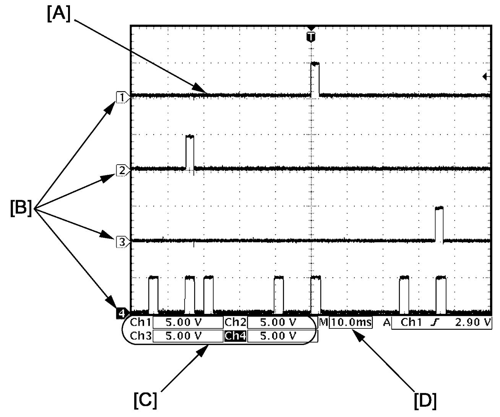

9E
| Inspection of Power Window Main Switch and Its Circuit |
Voltage Check
1)Remove door trim and power window main switch. 
2)Connect connector to power window main switch and set ignition “ON”.
3)Initialize power window system.
4)Check voltage using circuit tester.
NOTICE:
Failure to observe Precautions for Electrical Circuit Service may cause damage to anti-pinching system when measuring voltage.
Follow precautions in Precautions for Electrical Circuit Service when checking each voltage.
NOTE:
•Measure power window main switch with power window lock switch “OFF”.
•Outputs from terminals marked with asterisk (*) cannot be measured with voltmeter because they are pulse signals. Use oscilloscope for measuring these outputs.
•Outputs from terminals marked with asterisk (*) cannot be measured with voltmeter because they are pulse signals. Use oscilloscope for measuring these outputs.
 "Expand image")
| [A]: | Power window main switch connector (View: [a]) |
“J81” connector (LHD)
| Terminal No. | Wire color | Circuit | Normal voltage | Condition |
|---|---|---|---|---|
| J81-3* | YEL | Driver power window motor (Hall IC B) | Refer to reference waveform of Drive power window motor (Hall IC). | |
| J81-4* | BLU | Driver power window motor (Hall IC A) | ||
| J81-5 | GRN | Driver power window motor (DOWN) | Approx. 12 V | Driver window switch: DOWN |
| Approx. 0 V | Other than above condition | |||
| Driver power window motor (AUTO DOWN) | Approx. 12 V | Driver window switch: AUTO DOWN | ||
| Approx. 0 V | Other than above condition | |||
| J81-6 | RED | Driver power window motor (UP) | Approx. 12 V | Driver window switch: UP |
| Approx. 0 V | Other than above condition | |||
| Driver power window motor (AUTO UP) | Approx. 12 V | Driver window switch: AUTO UP | ||
| Approx. 0 V | Other than above condition | |||
| J81-7 | WHT | Backup power supply | Approx. 12 V | Ignition: “OFF”, “ACC” or “ON” |
| J81-8* | PPL | Illumination signal | Refer to Inspection of Combination Meter and Its Circuit. | |
| J81-9 | PNK | Driver door switch | Approx. 12 V | Driver door: CLOSE |
| Approx. 0 V | Driver door: OPEN | |||
| J81-10 | BLK | Ground for power window main switch | Approx. 0 V | Ignition: “OFF”, “ACC” or “ON” |
| J81-11 | LT GRN | Passenger power window switch (UP) | Approx. 12 V | Passenger window switch: UP |
| Approx. 0 V | Other than above condition | |||
| J81-12 | YEL | Passenger power window switch (DOWN) | Approx. 12 V | Passenger window switch: DOWN |
| Approx. 0 V | Other than above condition | |||
| J81-13 | BLK | Power supply for driver power window switch (Hall IC) | Approx. 12 V | Ignition: “ON” |
| Approx. 0 V | Ignition: 30 sec. after ignition “OFF” | |||
| J81-14 | BEG | Ground for driver power window motor (Hall IC) | Approx. 0 V | Ignition: “OFF”, “ACC” or “ON” |
| J81-15 | PNK | Rear left power window switch (DOWN) | Approx. 12 V | Rear left window switch: DOWN |
| Approx. 0 V | Other than above condition | |||
| J81-16 | RED | Illumination power supply | Approx. 0 V | Lighting switch: OFF position |
| Approx. 12 V | Other than above condition | |||
| J81-17 | GRY | Rear left power window switch (UP) | Approx. 12 V | Rear left window switch: UP |
| Approx. 0 V | Other than above condition | |||
| J81-18 | WHT | Rear right power window switch (UP) | Approx. 12 V | Rear right window switch: UP |
| Approx. 0 V | Other than above condition | |||
| J81-19 | BLU | Rear right power window switch (DOWN) | Approx. 12 V | Rear right window switch: DOWN |
| Approx. 0 V | Other than above condition | |||
| J81-20 | GRY | Ignition ON power supply | Approx. 12 V | Ignition: “ON” |
| Approx. 0 V | Ignition: “OFF” or “ACC” | |||
“J81” connector (RHD)
| Terminal No. | Wire color | Circuit | Normal voltage | Condition |
|---|---|---|---|---|
| J81-3* | YEL | Driver power window motor (Hall IC B) | Refer to reference waveform Drive power window motor (Hall IC). | |
| J81-4* | BLU | Driver power window motor (Hall IC A) | ||
| J81-5 | LT GRN | Passenger power window switch (UP) | Approx. 12 V | Passenger window switch: UP |
| Approx. 0 V | Other than above condition | |||
| J81-6 | YEL | Passenger power window switch (DOWN) | Approx. 12 V | Passenger window switch: DOWN |
| Approx. 0 V | Other than above condition | |||
| J81-7 | WHT | Backup power supply | Approx. 12 V | Ignition: “OFF”, “ACC” or “ON” |
| J81-8* | PPL | Illumination signal | Refer to Inspection of Combination Meter and Its Circuit. | |
| J81-9 | PNK | Driver door switch | Approx. 12 V | Driver door: CLOSE |
| Approx. 0 V | Driver door: OPEN | |||
| J81-10 | BLK | Ground for power window main switch | Approx. 0 V | Ignition: “OFF”, “ACC” or “ON” |
| J81-11 | GRN | Driver power window motor (DOWN) | Approx. 12 V | Driver window switch: DOWN |
| Approx. 0 V | Other than above condition | |||
| Driver power window motor (AUTO DOWN) | Approx. 12 V | Driver window switch: AUTO DOWN | ||
| Approx. 0 V | Other than above condition | |||
| J81-12 | RED | Driver power window motor (UP) | Approx. 12 V | Driver window switch: UP |
| Approx. 0 V | Other than above condition | |||
| Driver power window motor (AUTO UP) | Approx. 12 V | Driver window switch: AUTO UP | ||
| J81-13 | BLK | Ground for driver power window motor (Hall IC) | Approx. 0 V | Ignition: “OFF”, “ACC” or “ON” |
| J81-14 | GRY | Rear left power window switch (UP) | Approx. 12 V | Rear left window switch: UP |
| Approx. 0 V | Other than above condition | |||
| J81-15 | PNK | Rear left power window switch (DOWN) | Approx. 12 V | Rear left window switch: DOWN |
| Approx. 0 V | Other than above condition | |||
| J81-16 | RED | Illumination power supply | Approx. 0 V | Lighting switch: OFF position |
| Approx. 12 V | Other than above condition | |||
| J81-17 | BRN | Power supply for driver power window switch (Hall IC) | Approx. 12 V | Ignition: “ON” |
| Approx. 0 V | Ignition: 30 sec. after ignition “OFF” | |||
| J81-18 | WHT | Rear right power window switch (UP) | Approx. 12 V | Rear right window switch: UP |
| Approx. 0 V | Other than above condition | |||
| J81-19 | BLU | Rear right power window switch (DOWN) | Approx. 12 V | Rear right window switch: DOWN |
| Approx. 0 V | Other than above condition | |||
| J81-20 | GRY | Ignition ON power supply | Approx. 12 V | Ignition: “ON” |
| Approx. 0 V | Ignition: “OFF” or “ACC” | |||
Reference Waveform
Oscilloscope display
Shown below is typical waveform display provided by oscilloscope.
NOTE:
•Display includes the following types of data:

•Waveform varies depending on measurement condition and vehicle spec.

 "Expand image")
| [A]: | Waveform of channel 1 | [C]: | VOLT/DIV of each channel |
| [B]: | Ground level of each channel | [D]: | TIME/DIV |
Drive power window motor (Hall IC)
| Channel | Probe | Terminal No. |
|---|---|---|
| 1 | + | J81-4 |
| – | J81-13 | |
| 2 | + | J81-3 |
| – | J81-13 |
Measurement condition
•Driver side power window motor closing operation
 "Expand image")
| [A]: | Normal operation | 1. | Hall IC A signal |
| [B]: | Pinched | 2. | Hall IC B signal |